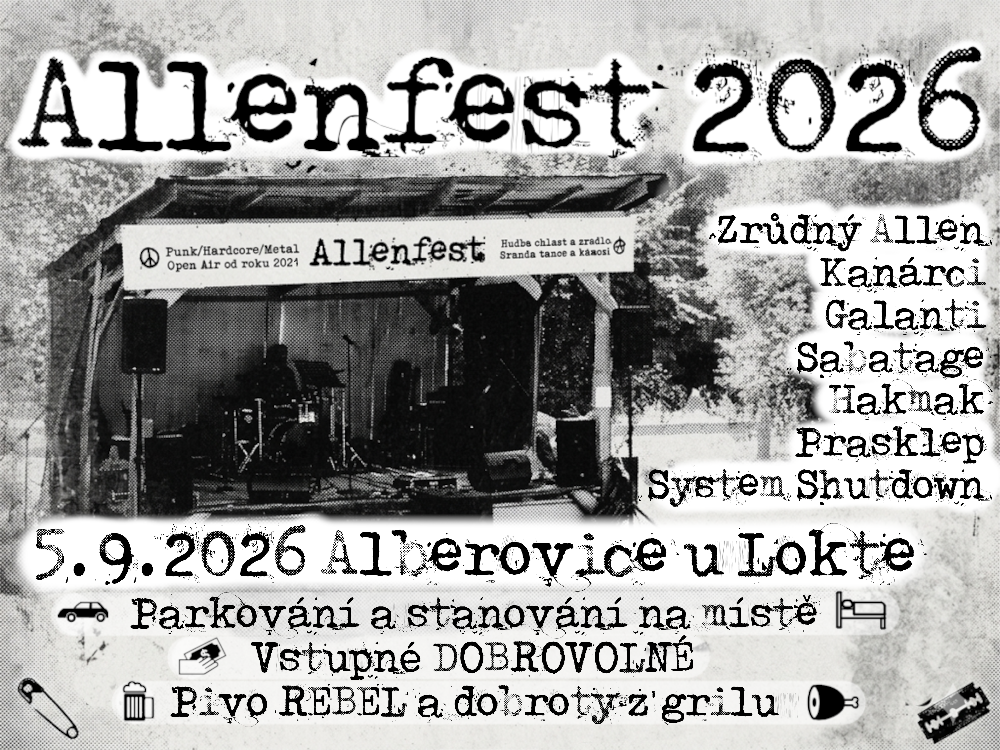
Punk, Metal, Hardcore, Grind, když to řve, patří to sem.
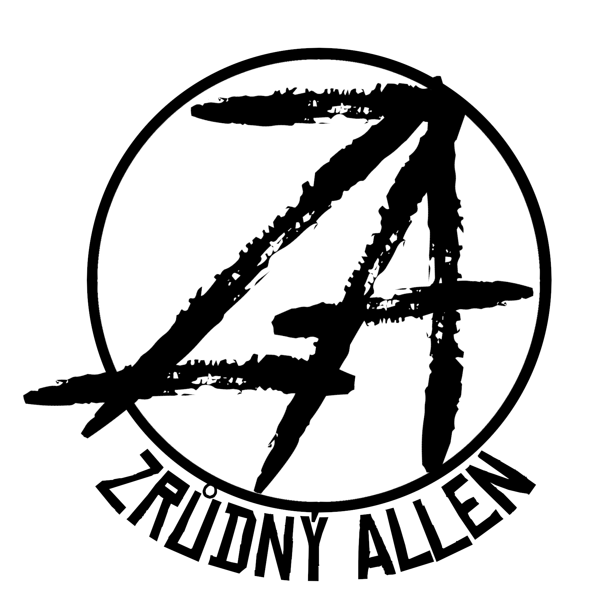
Zrůdný Allen
15:00
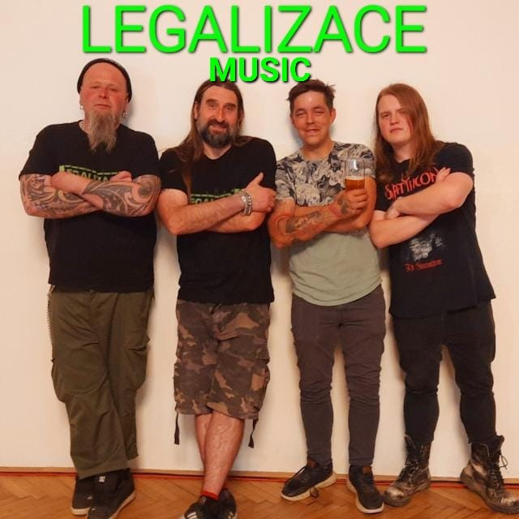
Legalizace Music
16:20
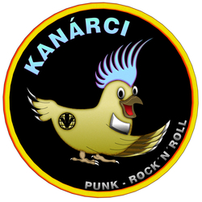
Kanárci
17:40
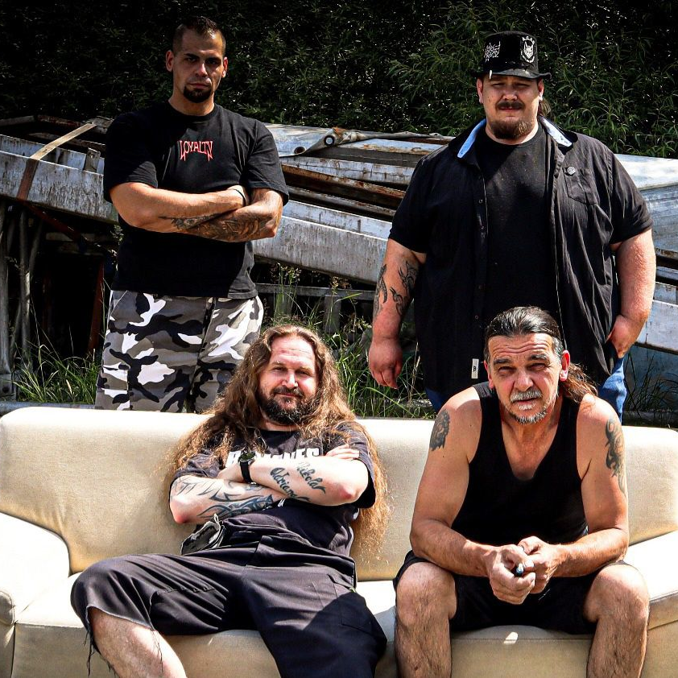
System Shutdown
19:00
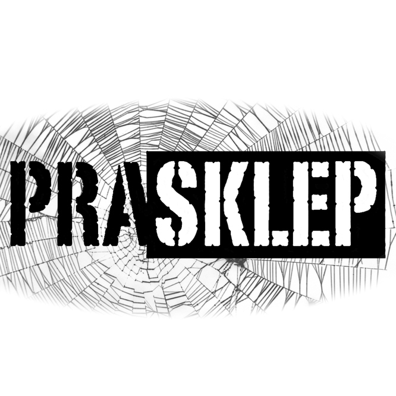
Prasklep
20:20
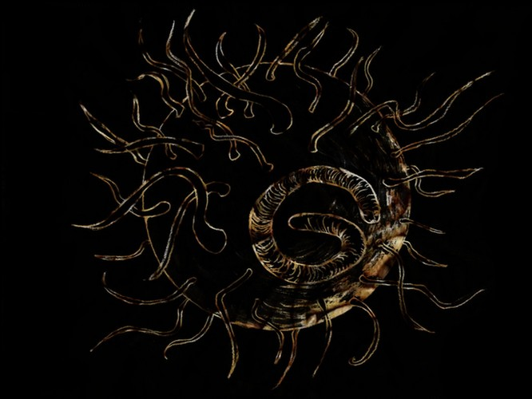
Galanti
21:40
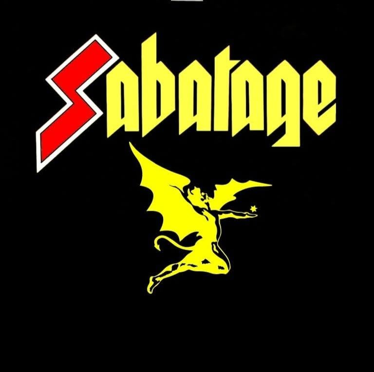
Sabatage
23:00
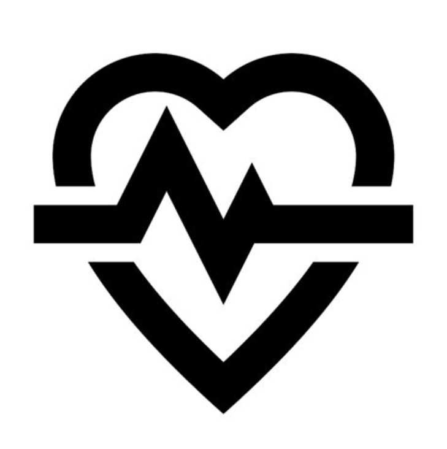
S výjimkou náhodných zažívacích obtíží a nervových záchvatů.
Ale raději si vemte špunty do uší a dobrý vkus odložte před vstupem.
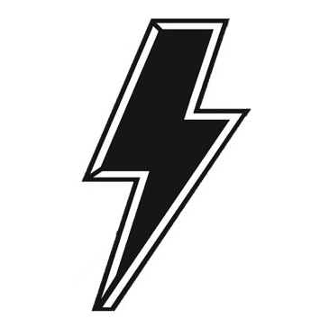
Pokud nezačne pěnit pivo a obsluha nedostane epileptický záchvat.
Rebel Hořká 11° a výběr nealko limonád a žbrďol.
Další občerstvení bude k dispozici.
K večeru se zapaluje ohýnek, tak klidně přibalte buřty pro trochu podzimní romantiky za zvuků řízného panku.
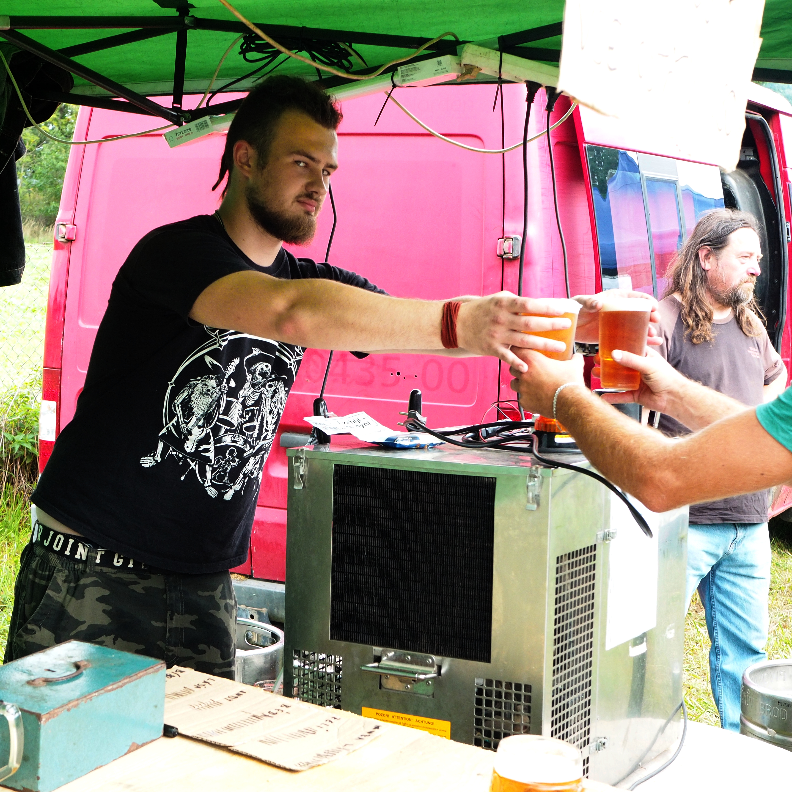
Vstupné je dobrovolné, nicméně na místě je možnost přispět větší finanční částkou na mentálně postižené (pořádající).
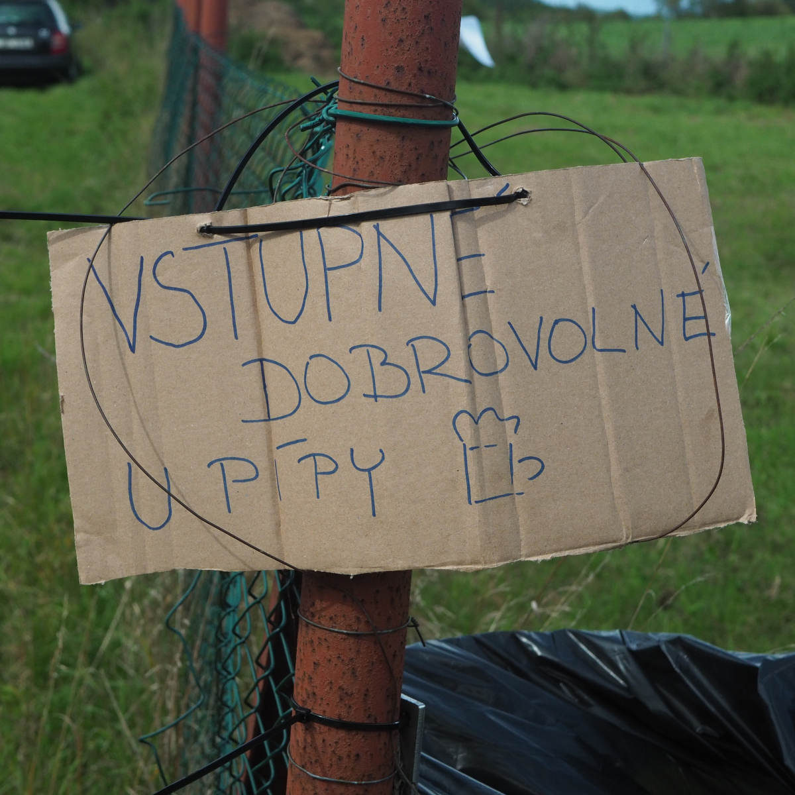
Kudy k nám? Sjeď z D1 na Exitu66 (Poznáš ho snadno, je tam Mekáč, KFC, Burger King a Bagetérie Bulvár). Projeď kolem Fástfůdů a za kopcem jsou Alberovice. Za prvním domem to zalom z hlavní doprava, objeď barák a už uvidíš pódium. Ale radši : OTOČ SE NA NÁVSI! Parkovat lze podél příjezdové cesty, v případě naplnění kapacity potom na návsi. Nemáte-li vůz ani motorku, do blízkého Lokte jezdí autobusy z Prahy, na festival je to 2,2km/~35 min. pěšky.
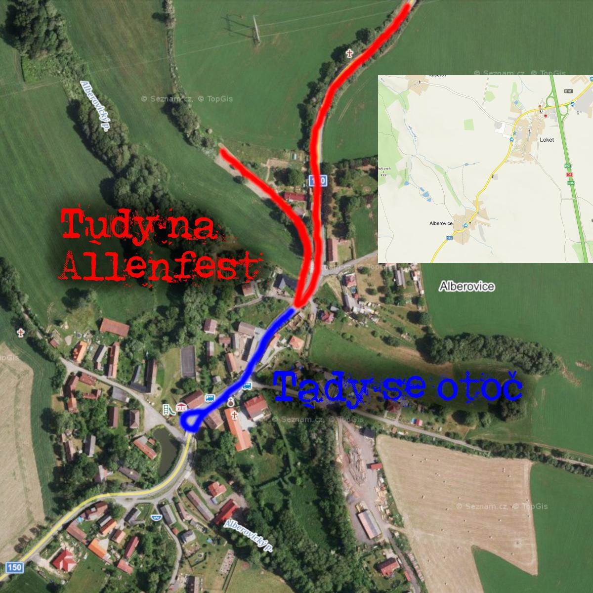
V areálu je vyhrazené místo pro stany, je možné spát i v autě. A jestli nechcete tahat stan, můžete ulehnout na pankáče v pivním stanu, nebo u ohně. Pozor! Zářijové noci už bývají poměrně chladné!
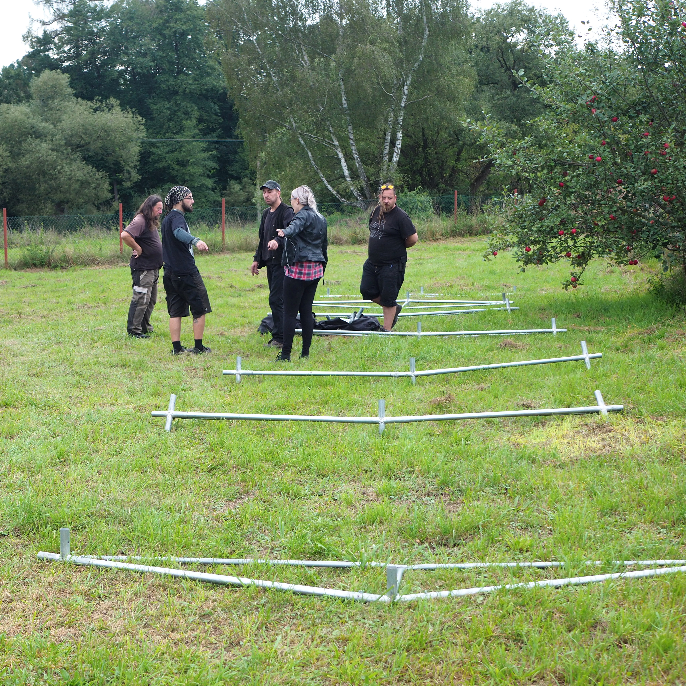
První písemná zmínka o vesnici pochází z roku 1399. Ve 14. a 15. stol. zde bylo několik malých vladyckých statků. V 16. stol. se z nich staly statky svobodnické. V roce 1586 je připomínán Jan Kamaryt, který kromě dvora Kamarytovského držel dvě další tvrze. V letech 1869–1979 příslušela osada k obci Němčice, od 1. ledna 1980 spadá jako část obce pod Loket. V květnu roku 2021 zde na zahradě rodičů baskytaristy kapely Zrůdný Allen (dále jen ZA) Martina Zelenky zpěvák a kytarista ZA Jan Lebeda slaví narozeniny koncertem kapel Zrůdný Allen a Kanárci, v důsledku čehož druhý kytarista ZA Bedřich Uher pojímá kravský nápad na stejném místě oslavit i svoje narozeniny počátkem září. Rodina Zelenků je nadšena a rodí se Allenfest. Během léta je vztyčeno punkové pódium pod důsledným dohledem bubeníka Franka Schůrka, které pojme více hudebníků než předcházející podlážka z palet a malý nůžkový stan. Finanční ztráty jsou zanedbatelné a jizvy po prodaných ledvinách mizí rychle, a tak se festival opakuje i v roce 2022.
V následujících letech došlo k několika zásadním zlepšením – například opravě pódia, vyztužení pódia, opravě pódia, dalšímu vyztužení pódia, stavbě latríny, vyztužení pódia a další opravě pódia.
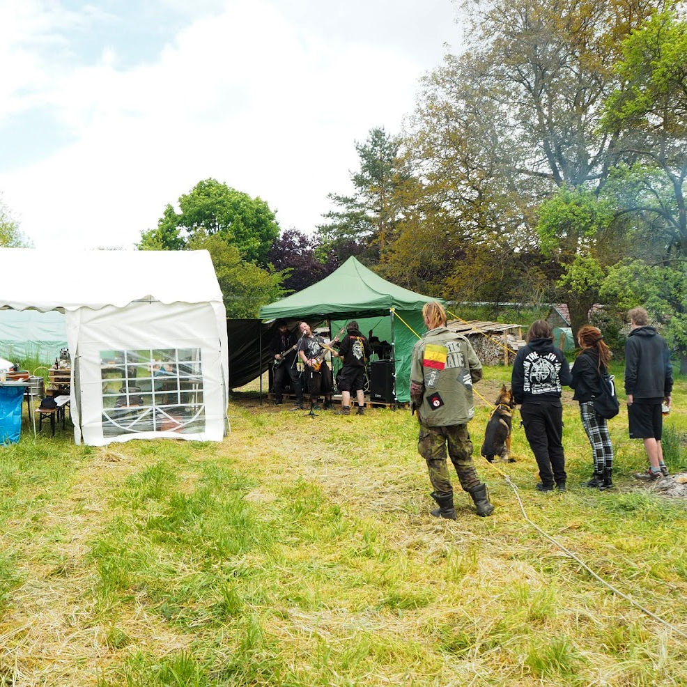